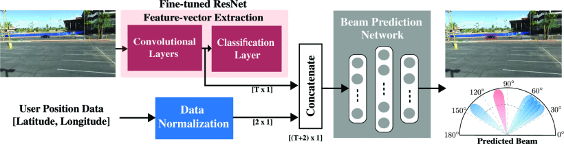
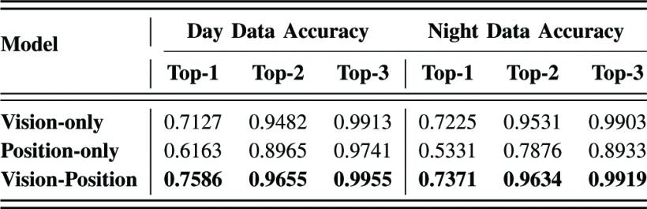
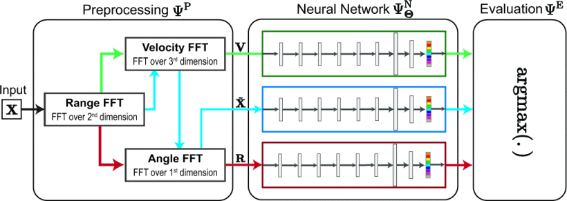
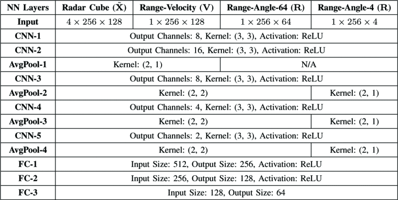
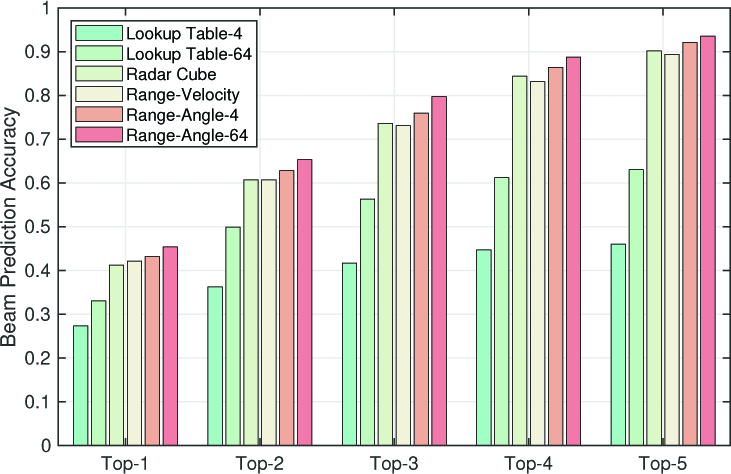
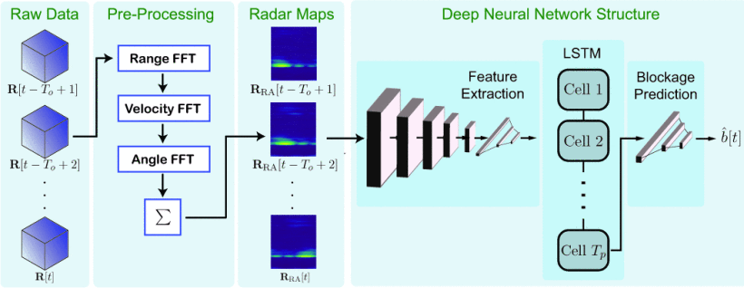
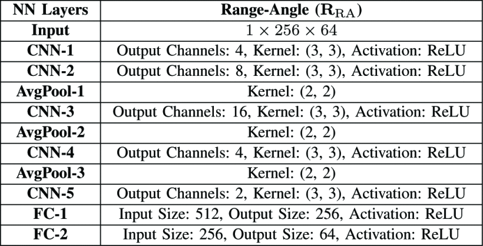
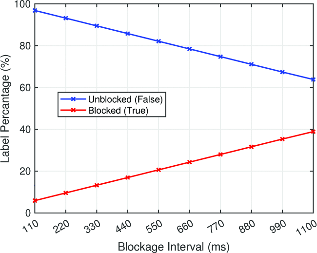
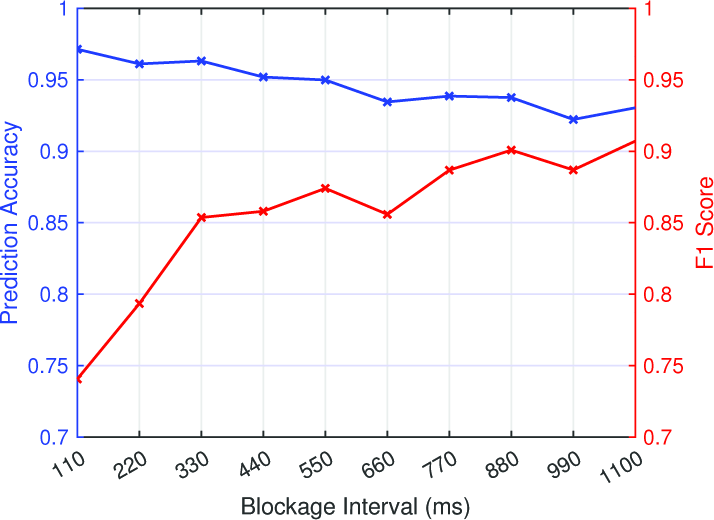

文献记录
1. Vision-Position Multi-Modal Beam Prediction Using Real Millimeter Wave Datasets
[已阅读]
作者： Gouranga Charan et al.
发表： IEEE WCNC, 2022
PDF： 点击查看
开源代码： 无
显示详情
主要贡献： 提出基于视觉与位置融合的多模态机器学习框架，在无需信道状态信息的前提下，实现毫米波/太赫兹波束快速预测。模型基于真实车辆数据集（DeepSense 6G）进行训练与验证，在Top-3预测准确率上接近100%，显著降低波束训练开销。
采用方法： 文章采取两种模态：视觉模态和位置模态，分别提取图像特征和位置信息，通过融合网络进行联合建模。视觉模态通过 ResNet-50 提取图像特征，位置模态通过 MLP 网络提取特征，最后将两者特征进行拼接 Concat。

实验结果： 采用 Deepsense 6G 数据集中的场景5和场景6进行实验，两种场景分别为白天和黑夜，取得的结果如下：

局限性： （1）GPS位置精度受限，影响纯位置信息预测性能；（2）模型仅适用于单用户场景，未考虑多用户干扰；（3）摄像头未采集深度信息，视觉鲁棒性在恶劣天气中待验证；（4）只考虑静态图像，未建模用户运动或信道时序动态。
2. Blockage Prediction Using Wireless Signatures: Deep Learning Enables Real-World Demonstration
[已阅读]
作者： Shunyao Wu et al.
发表： IEEE Open Journal of the Communications Society, 2022
PDF： 点击查看
开源代码： 无
显示详情
主要贡献：
毫米波通信高度依赖视距链路，容易被动态阻塞（如行人、车辆）影响可靠性与时延。
现有解决方案存在如下问题：
多连接方案资源效率低；
外部传感器（如相机/LiDAR）增加系统复杂度和成本；
信道估计类方法仅感知当前状态，缺乏前瞻性。
本工作提出完全基于毫米波接收功率（RSS）序列的阻塞预测方法，无需额外传感器。
核心贡献包括：
提出“预阻塞签名”（Pre-blockage Wireless Signature）的概念，揭示阻塞前的功率扰动模式；
设计深度学习模型同时预测：是否阻塞、何时发生、阻塞类型、阻塞方向；
构建两个真实场景大规模数据集（共约 46 万条毫米波测量数据），覆盖室内/室外多类动态阻塞。
采用方法：
提出四个子任务，并分别建模：
是否将发生阻塞？（二分类）
阻塞将于何时发生？（回归）
阻塞的严重程度？（多分类）
阻塞物的移动方向？（多分类）
采用两类模型结构：
RNN（GRU） ：建模时间序列中的功率变化特征；CNN ：提取波束-时间联合特征，对方向与类型判别更具优势。
损失函数设计：
分类任务采用交叉熵损失；
回归任务采用均方误差（MSE）。
实验结果：
阻塞发生预测准确率超过 85% （室外场景）；
可提前 600ms 成功预测，平均时间误差低于 100ms ；
RNN 与 CNN 架构在不同任务中表现互补，CNN 在方向与类型判别中更优。
结合 3GPP 接入流程，预测辅助 handoff 可将切换时延从 222.8ms 降低至 11.4–80ms 。
局限性：
仅考虑静态发射/接收器，未处理用户运动导致的信道动态变化。
跨场景、跨天气条件下的泛化能力未充分评估。
对恶劣信道（雨衰、非视距等）和硬件非理想因素的鲁棒性缺乏系统性分析。
3. Radar Aided 6G Beam Prediction: Deep Learning Algorithms and Real-World Demonstration
[已阅读]
作者： Umut Demirhan, Ahmed Alkhateeb 发表： IEEE WCNC, 2022
PDF： 点击查看
开源代码：
GitHub
[代码已跑通]
显示详情
主要贡献：
提出首个基于深度学习的毫米波雷达辅助波束预测算法，并在真实车联网场景中完成实证验证。
设计多种雷达预处理方法（Range-Angle、Range-Velocity、Radar Cube），结合CNN模型实现从雷达数据到波束的映射。
构建毫米波通信与雷达融合的大规模真实数据集，利用 DeepSense 6G 平台进行收集，包含超 6 千条数据样本。
在不依赖雷达与通信模块校准的条件下，实现 Top-5 波束预测准确率接近 90%，并将波束训练开销减少约 93%。
采用方法：
系统模型：
基站配备 77GHz FMCW 雷达与 60GHz 通信相控阵；用户端采用准全向天线发射。
数据预处理：
Range-Angle Map ：时域FFT + 空域FFT；Range-Velocity Map ：时域FFT + 脉冲FFT（Doppler）；Radar Cube ：三维FFT，保留完整时-频-空特征。
模型结构：
设计轻量CNN网络：5个卷积层 + 平均池化 + 3层全连接，适配不同输入维度（详见 Table II）；
损失函数为交叉熵，多分类 Top-K 预测问题。


实验结果：
Range-Angle 模态下 Top-5 波束预测准确率达 93.5% ，显著优于传统查找表法（<33%）；
模型大小约为 175K 参数，推理时延低于 0.5ms ，预处理耗时受 FFT 分辨率影响显著；
仅使用 10%-20% 训练数据即可达到较好效果，Range-Angle Map 对数据需求更低，泛化更强。

局限性：
数据集中仅使用单用户场景，未评估多用户、多目标干扰下的鲁棒性；
模型结构偏轻量，Radar Cube 模态性能受限，未来可探索更深层网络或 Transformer；
未引入运动轨迹连续性建模，忽略帧间时序相关性。
4. Radar Aided Proactive Blockage Prediction in Real-World Millimeter Wave Systems
[已阅读]
作者： Umut Demirhan, Ahmed Alkhateeb
发表： IEEE ICC, 2022
PDF： 点击查看
开源代码： GitHub
显示详情
主要贡献：
首次提出利用毫米波FMCW雷达实现未来链路阻塞 的前瞻性预测，提升高频通信的可靠性。
构建基于 DeepSense 6G 平台的大规模实测数据集，包含超过 1 万条 雷达与通信联合测量样本。
设计结合 CNN 与 LSTM 的深度神经网络，实现时序雷达图像输入的二分类阻塞预测，提前最多 1 秒预警。
预测精度达到 90%+ 的准确率和 F1 分数 ，模型总参数仅约 18 万，部署代价低。
采用方法：
系统模型：
基站配备 60GHz 相控阵和 77GHz FMCW 雷达，用户端为静态全向发射；
采用 block fading 模型建模阻塞事件，雷达每帧周期为 110ms；
数据预处理：
对雷达 ADC 数据进行 Range、Doppler、Angle FFT，生成 Radar Cube ；
求和压缩为二维 Range-Angle Map ，用于输入深度模型。
模型结构：
CNN 特征提取（5层卷积+池化）+ LSTM 建模时序特征 + FC 预测层；
使用 Sigmoid 输出概率并转为二分类结果。


实验结果：
预测提前 1 秒 （Tp=10）仍达 92~97% 准确率，F1 分数 > 90%；
使用 DeepSense Scenario 30 采集，包含 307 条独立阻塞序列，共 14624 个样本点；
最终训练样本为 6965 条，验证 1808 条，测试 907 条，模型参数仅 184K 。


局限性：
未扩展到动态用户、多用户、多基站场景；
未考虑复杂天气或弱反射目标下的鲁棒性问题；
目前输入为 Range-Angle Map，未来可探索 Radar Cube 3D建模。
5. LiDAR-Aided Mobile Blockage Prediction in Real-World Millimeter Wave Systems
[已阅读]
作者： Shunyao Wu, Chaitali Chakrabarti, Ahmed Alkhateeb
发表： IEEE WCNC, 2022
PDF： 点击查看
开源代码： 无
显示详情
主要贡献：
首次提出基于 LiDAR 的链路阻塞预测方法，在真实城市街景中进行毫米波系统实测验证。
构建超过 30 万条 多模态实测样本的大规模数据集（DeepSense Scenarios 24–27），包含 LiDAR、RGB 图像与 mmWave 通信数据。
设计静态聚类去噪算法（SCR）以提升低成本 LiDAR 数据质量，并显著增强预测性能。
所提出 CNN 模型在预测提前 1 秒时仍保持 80%+ 准确率，0.1 秒预测时达到 95% 。
采用方法：
系统模型：
固定基站配备 16 阵列天线与同步 LiDAR，面向静态用户方向扫描环境；
采用预定义波束码本（64 个波束）与 360 度 LiDAR 点云序列。
数据预处理：
提出 SCR 算法 ：基于视场过滤 + 字典匹配，剔除静态点与路径反射点；
对原始 460 点缩减为 216 个角度量化点，并进行距离量化。
模型结构：
设计 2 层 CNN 卷积堆栈 + MaxPooling + FC 分类器的轻量网络；
输入为 16×216×2 LiDAR 序列张量，预测未来 TP 时刻内是否阻塞。
实验结果：
在预测提前 0.1 秒 时，准确率最高达 95% ，提前 1 秒仍保持 80%+ 准确率；
相比 mmWave 信号预测（低于 0.6 秒后快速下降），LiDAR 预测在长时间预测上更具优势；
平均参数量仅 6883 ，低算力设备上亦可运行；
在 3GPP 场景下，阻塞预测可将平均切换延迟从 222.8ms 降低至 35.43ms （SCR + 1s）。
局限性：
LiDAR 模型受限于视场角和点密度，尚未探索点云 3D 特征或与图像融合的增强建模方式；
当前测试场景为静态基站和静态用户，对动态用户预测能力需进一步拓展；
尚未开源代码或公开 LiDAR 清洗后的数据子集，复现难度较高。
6. LiDAR Aided Future Beam Prediction in Real-World Millimeter Wave V2I Communications
[已阅读]
作者： Shuaifeng Jiang, Gouranga Charan, Ahmed Alkhateeb
发表： IEEE Wireless Communications Letters, 2023
PDF： 点击查看
开源代码：
GitHub
[代码已跑通]
显示详情
主要贡献：
首次在真实大规模数据集中验证 LiDAR 数据用于 当前与未来 波束预测的有效性。
提出基于 GRU 的编码器-解码器网络，能够根据历史 LiDAR 感知信息预测未来多个时刻的最佳波束。
在 DeepSense 6G 场景 8 上进行实测评估，提出方法在 top-5 准确率上达到 95.6% （当前波束），未来波束预测保持 >94% 接收功率比。
相比基线方法大幅降低了波束训练开销，可实现 90%+ 的开销节省。
采用方法：
系统模型：
静止基站（BS）安装 16 阵列天线与 360° LiDAR；
移动用户设备（UE）为 60 GHz 全向发射器，基站使用 64 波束码本进行通信。
数据预处理：
每个采样周期收集一帧原始 LiDAR 点云（460 点）并量化为 216 角度 bin ；
信道采样间隔为 128ms ，数据包括 LiDAR 和 64 波束接收功率向量。
模型结构：
采用 GRU 编码器-解码器网络，支持 当前波束预测 与 未来 v 步预测 ；
输入：长度为 W=8 的 LiDAR 序列，输出：V+1=4 个当前及未来波束；
每一帧 LiDAR 经 FC 层降维至 64-d 向量后输入 GRU，输出经 softmax 分类器预测 beam。
实验结果：
当前波束预测 ：top-5 准确率为 95.6% ；未来第一帧预测 ：top-5 准确率为 95.0% ，top-1 相对功率保持 >94%；与基线比较 ：仅需使用 10.4% 的 beam training 开销即可达到相似精度；模型推理速度为 1.38ms（CPU） ，具备实际部署可行性。
局限性：
当前研究聚焦单用户场景，尚未扩展至多用户系统；
LiDAR 在极端天气（雨、雾）下性能下降，需考虑多模态增强；
模型依赖精确同步的 LiDAR 与通信数据，实际部署需进一步验证。
7. Computer Vision Aided Beam Tracking in A Real-World Millimeter Wave Deployment
[已阅读]
作者： Shuaifeng Jiang, Ahmed Alkhateeb
发表： IEEE Globecom Workshops (GC Wkshps), 2022
PDF： 点击查看
开源代码： GitHub
显示详情
主要贡献：
首次在真实 V2I 场景中验证视觉辅助波束跟踪的可行性，利用 RGB 图像信息实现低开销、高精度的波束预测。
提出端到端计算机视觉辅助波束跟踪模型，结合目标检测（YOLOv4）与时序建模（GRU）进行 beam sequence 预测。
在 DeepSense 6G 场景 8 上实测验证，模型在 top-5 精度下达到 98.95% ，并实现超过 99% 的 beam training 开销节省。
采用方法：
系统模型：
静态基站（BS）装备 16 阵列天线 + RGB 相机；
用户设备（UE）为 60GHz 发射端，使用 64 波束码本进行波束扫描。
数据处理流程：
利用 YOLOv4 提取每帧图像中的车辆 bounding box 特征，作为动态环境表示；
构造时序输入：以 8 帧历史图像作为输入序列，映射为 64 维嵌入向量。
模型结构：
编码器：YOLOv4 + FC 映射为时间步嵌入；
GRU 模块学习时序特征，解码器输出未来 5 步波束方向预测；
每一步均通过 softmax 分类器输出 top-1 或 top-5 波束索引。
实验结果：
Top-1 波束预测准确率：64.47%
Top-5 波束预测准确率：98.95%
Top-1 归一化接收功率：97.66%
预测延迟仅 1.45ms ，可部署于实际系统中。
与 baseline（使用过去 beam 序列）比较，开销下降超过 99% 。
局限性：
仅评估单一场景（Scenario 8）与单用户设置，泛化能力尚待验证；
仅采用 RGB 图像，缺乏多模态信息融合（如 LiDAR 或信道特征）；
YOLOv4 对不同光照和天气条件下的鲁棒性未深入讨论。
8. Position-Aided Beam Prediction in the Real World: How Useful GPS Locations Actually Are?
[已阅读]
作者： João Morais, Arash Behboodi, Hamed Pezeshki, Ahmed Alkhateeb
发表： 2023 IEEE International Conference on Communications (ICC), Mobile and Wireless Networks Symposium
PDF： 点击查看
开源代码： GitHub
显示详情
主要贡献：
首次基于真实世界数据（DeepSense 6G 数据集）评估 GPS 位置辅助毫米波波束预测的实用性，填补了模拟与现实之间的研究空白。
比较了经典算法（查找表、KNN）和神经网络（NN）在真实 GPS 数据上的性能，揭示了真实数据中性能下降的关键因素。
提出了一种新的机器学习评估指标——平均功率损失（Power Loss），更准确地反映波束预测对通信系统性能的影响。
分析了 GPS 噪声和标签噪声（如多径衰落、波束重叠）对预测性能的影响，并量化了波束训练开销的潜在节省。
采用方法：
系统模型：
基站（BS）配备 64 天线均匀矩形阵列，操作在 60GHz；
用户设备（UE）为单天线设备，采用 64 波束码本进行波束扫描；
使用商用 GPS 设备采集 UE 位置数据，结合功率测量进行波束预测。
数据处理流程：
基于 DeepSense 数据集（场景 1-9），包含 GPS 位置和 60GHz 信道测量数据；
对 GPS 数据进行归一化和量化（200 bins，0.005 分辨率）；
数据采集频率约为 10Hz，覆盖 ASU 校园不同场景（白天/夜晚）。
模型结构：
查找表（LT）：基于量化位置的静态映射；
KNN：基于最近邻的波束选择；
神经网络（NN）：全连接网络，2 层隐藏层（128 节点），使用交叉熵损失和 Adam 优化器，训练 60 轮，初始学习率 0.01，学习率调度在第 20 和 40 轮乘以 0.01。
实验结果：
Top-1 准确率（NN）：场景 1-9 范围为 27.82% - 55.57% ，平均优于 LT 和 KNN；
平均功率损失（Power Loss）：场景 1-9 范围为 0.27 dB - 2.63 dB ；
70% 功率波束集大小（DSS^0.7）：场景 1-9 范围为 5.99 - 27.58 ，反映不同场景的波束分布差异；
NN 在 Top-5 预测中表现出更好的泛化能力，优于 LT 和 KNN，尤其在复杂场景中；
与合成数据相比，真实数据性能显著下降，主要由于 GPS 噪声和非高斯标签噪声。
局限性：
仅使用 GPS 数据，缺乏多模态融合（如视觉、雷达或 LiDAR 数据），可能限制预测精度；
实验局限于单用户场景，未评估多用户或动态环境的性能；
GPS 噪声的时空相关性未深入建模，可能影响模型鲁棒性；
场景间性能差异较大，模型泛化能力需进一步优化。